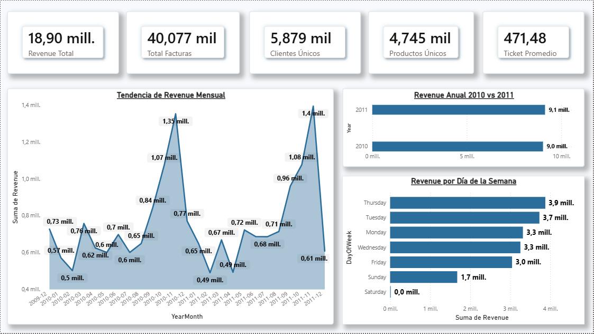
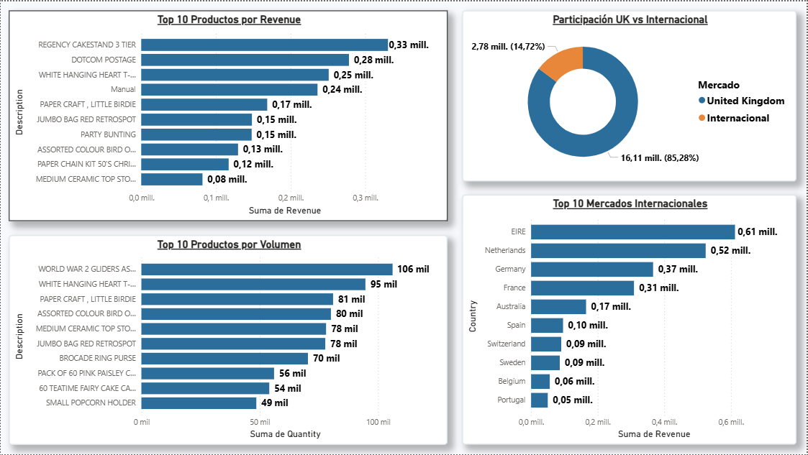
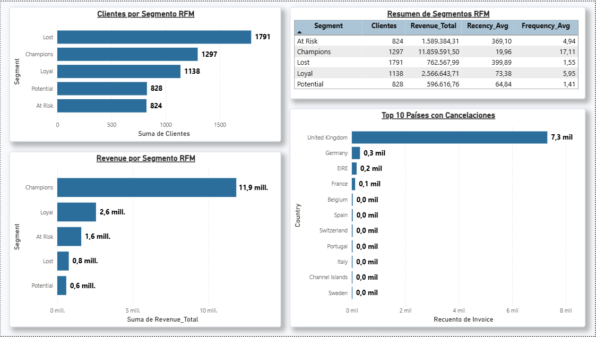
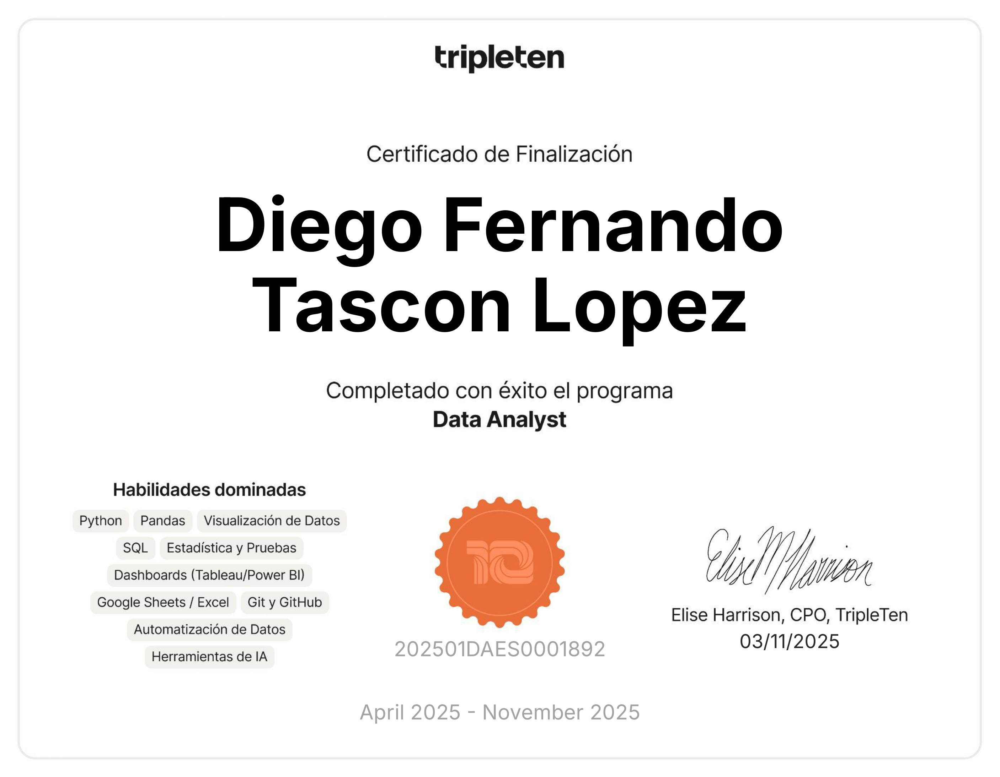

Antes de convertirme en analista, pasé años en roles operativos y administrativos donde la precisión de los datos era crítica para la operación diaria. Ahí entendí algo fundamental: los datos no solo se registran, se interpretan — y esa interpretación es la que mueve los resultados del negocio.
Esa convicción me llevó a formarme en análisis de datos, combinando Python, SQL y herramientas de Business Intelligence con una visión que pocos analistas Jr tienen: el entendimiento real de cómo operan los negocios desde adentro.
Hoy desarrollo proyectos enfocados en las industrias que mejor conozco — Retail, E-commerce, Logística y Marketing Digital — donde transformo datos en decisiones accionables sobre rentabilidad, segmentación de clientes y optimización operativa.
No me quedo en el dashboard. Conecto los números con decisiones.
Optimización de inventarios, análisis de comportamiento de compra y segmentación de clientes para maximizar rentabilidad.
Análisis de SLA, optimización de rutas y reducción de costos operativos mediante modelos predictivos de demanda.
Análisis de CAC, LTV y ROMI por canal de adquisición, validación experimental A/B y optimización del funnel de conversión.
De +1 millón de transacciones reales a decisiones comerciales concretas — análisis end-to-end con Python, SQL Server y Power BI.
Limpieza de +1M registros, EDA, preprocesamiento y segmentación RFM completa sobre datos reales.
Validación de integridad, corrección de datos y queries analíticas para responder preguntas de negocio.
Dashboard ejecutivo de 3 páginas conectado directamente a SQL Server con insights accionables.

Resumen General
Productos & Mercados
Segmentación RFM1,297 clientes Champions concentran el 68.3% del revenue con ticket promedio de £9,143 — perfil mayorista de alto valor crítico a proteger.
824 clientes At Risk llevan 369 días sin actividad con historial probado de compra — oportunidad de reactivación de alto retorno esperado.
UK representa el 85.28% del revenue. EIRE, Netherlands y Germany lideran los mercados internacionales con mayor potencial de expansión.
Cómo transformé 5 años de datos históricos en un modelo predictivo que optimiza inventarios en tiempo real para una cadena de 10 tiendas y 50 productos.
Quiebres de stock y sobreinventario generaban costos ocultos masivos en la cadena de suministro.
Random Forest Regressor con Feature Engineering temporal: lags, promedios móviles y variables de estacionalidad.
Modelo con MAE de 6.26 frente a una media de 52 unidades — logística reactiva convertida en planificación proactiva.
Una visión estratégica sobre cómo transformar información en resultados medibles para el negocio.
Traducción de hallazgos técnicos a impacto financiero y analogías claras.
Equilibrio entre sinergia grupal y resolución autónoma de retos complejos.
Alineación estratégica de los datos con los objetivos de rentabilidad corporativa.
Flexibilidad para pivotar prioridades según las necesidades críticas del negocio.
Capacidad de autoaprendizaje y resolución independiente de problemas técnicos.
Deducción de patrones lógicos para maximizar la eficiencia analítica.

Abril 2025 — Noviembre 2025
Noviembre 2024
Profundizando en SQL avanzado para análisis de datos a escala empresarial.
Fortaleciendo el stack de Python para análisis avanzado y automatización de reportes.
Desarrollando fluidez para comunicarme con equipos internacionales y presentar análisis en entornos globales.

Análisis sobre +1M transacciones reales. Segmentación RFM identificó que el 23% de clientes genera el 80% del revenue, con 824 clientes At Risk de alto potencial de reactivación.

Validé estadísticamente que los cambios en el embudo no afectaron negativamente la conversión, mitigando riesgos financieros antes del despliegue total.

Desarrollé un modelo predictivo que optimiza el inventario diario, reduciendo potenciales quiebres de stock mediante el análisis de estacionalidad.
Determiné que el canal de marketing 3 recupera la inversión (CAC) 2 meses antes que los demás, permitiendo optimizar el ROMI de la empresa.